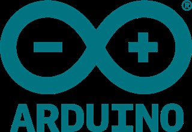

Mis Habilidades en Ingeniería de Sistemas
Dominio Tecnológico: Como Ingeniero de Sistemas manejo múltiples lenguajes de programación, arquitectura de servidores, bases de datos y electrónica digital, desde algoritmos de complejidad O(n2) hasta sistemas automatizados de control (H2O y CO2).



Lenguajes: HTML5 | CSS3 | JavaScript | Python | SQL | C++ | Arduino | Redes TCP/IP
Áreas Técnicas que Domino (Listas Anidadas)
- Desarrollo Web y Ingeniería de Software
- Frontend
- HTML (Estructura de páginas web)
- CSS (Diseño y estilos)
- JavaScript (Interactividad)
- Backend y Bases de Datos
- Python, PHP y C#
- Administración de Bases de Datos SQL
- Infraestructura, Servidores y Redes
- Configuración de Servidores y Centros de Datos
- Instalación de laboratorios de computación y redes LAN
- Robótica Educativa y Microcontroladores (Arduino)
Glosario de Tecnologías que Utilizo (Lista de Definiciones)
- HTML
- Lenguaje de marcado con el que estructuro todas las páginas y portales web.
- Centro de Datos (Data Center)
- Infraestructura de servidores de alto rendimiento donde se alojan los sistemas y bases de datos en la nube.
- Arduino y Robótica
- Plataforma de hardware y programación electrónica para automatización y proyectos tecnológicos.
- Algoritmo
- Conjunto ordenado de pasos lógicos para resolver cualquier problema mediante código.
Ir a las demás secciones de mi Portafolio:
1. Ir a la página principal (Inicio)
2. Ir a Sobre Mí
4. Ir a Mis Proyectos y Sistemas
5. Ir a Mi Galería de Ingeniería y Docencia
6. Ir a Contacto y Redes Sociales